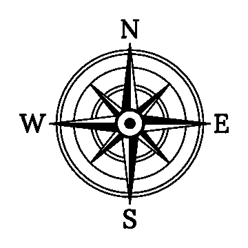

<script src="/src/app/map/map.page.js"></script>
<ion-content [fullscreen]="true">

  <meta name="viewport" content="width=device-width, initial-scale=1.0">
  <div class="container">
    <!-- Upper Section -->
    <div class="upper-section">
      <!-- Back Button with Icon -->
      <button routerLink="/description" class="back-button">
        
      </button>

      <!-- Frog Image -->
      

      <!-- Speech Bubble -->
      <div class="speech-bubble">
        <p>Gerturatu <b>Durangoko Udalera </b>jolastu ahal izateko</p>
      </div>
    </div>

    <!-- Main Content with Background Image -->
    <div class="map-section">
      <!-- Compass Image -->
      

      <!-- Zigzag Images with Steps -->
      <div class="image-path">
        <!-- First Image in Zigzag -->
        

        <!-- Second Image in Zigzag -->
        

        <!-- Third Image in Zigzag -->
        

        <!-- Fourth Image in Zigzag -->
        

        <div class="steps-group">
          
          
                   
          
          
          
          
          
           
          
          
          
      </div>
      

        <!-- Fifth Image in Zigzag -->
        
      </div>
    </div>
  </div>

</ion-content>
